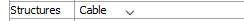
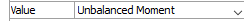
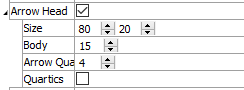
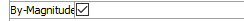
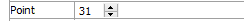
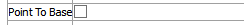

矢量（结构单元）绘图项
说明
显示所选结构单元类型的矢量数据。
属性
结构（Structures） 数值（Value） 箭头（Arrow Head） 按大小（By-Magnitude） 等值线（Contour） 点（Point） 指向基点（Point to Base） 比例（Scale） 映射（Map） 变形系数（Def-Fac） 透明度（Transparency） 图例（Legend）
结构

指定要显示哪些结构单元。
结构：选择以下之一：“全部”、“梁”、“锚索”、“土工格栅”、“衬砌”、“桩”或“壳”。
值

选择要显示的矢量数值。
| 施加的力 | 耦合弯矩 |
| 施加的弯矩 | 位移 |
| 耦合角位移 | 不平衡力 |
| 耦合位移 | 不平衡弯矩 |
| 耦合力 | 速度 |
箭头

控制矢量箭头的显示外观。
箭头：在矢量上渲染箭头（勾选）。
大小：分别设置箭头的长度和宽度。
主体：设置箭杆的粗细。
箭头质量：设置箭头中包含的“边”数（足够小的数目，例如“4”，会产生更“方块状”的箭头）。
四次曲面：对箭头采用一种替代的、比默认方法更快的渲染方法（勾选）。这可能会在部分显卡上引起问题。
按大小

使用等值线配色或统一颜色为矢量着色。
按大小：设置（勾选）矢量箭头按等值线配色着色（见下方的 等值线）。未勾选时，此属性后面跟随一个 颜色 属性（详情请参见标准的 颜色（color） 属性说明），用于为绘图项中的所有矢量指定统一颜色。
等值线
设置用于为箭头着色的等值线。详情请参见标准的 等值线（contour） 控件说明。
点

设置用于指示矢量点位置的点的大小。当 按大小 未勾选时，会包含一个 颜色 属性（详情请参见标准的 颜色（color） 属性说明）。
点：设置大小。
指向基点

“反转”矢量箭头，使箭头指向矢量的点源。
指向基点：设置（勾选）箭头指向矢量的点源，而不是从点源向外发出。
比例

缩放该项目。详情请参见标准的 比例（scale） 控件说明。
映射

将该项映射到新的模型坐标。详情请参见标准的 映射（map） 控件说明。
变形系数

设置变形系数。详情请参见标准的 变形系数（def-fac） 控件说明。
透明度

设置绘图项的透明度。详情请参见标准的 透明度（transparency） 控件说明。
图例

设置绘图图例中该项目的标签。详情请参见标准的 图例（legend） 控件说明。
在 标题 下方，矢量（结构单元）绘图项还在 图例 中为 映射、变形系数、最大值、比例 和 等值线 提供控件。
| 这些内容对您有帮助吗？… | FLAC3D © 2019, Itasca | 原文更新于 2020 年 10 月 8 日 |